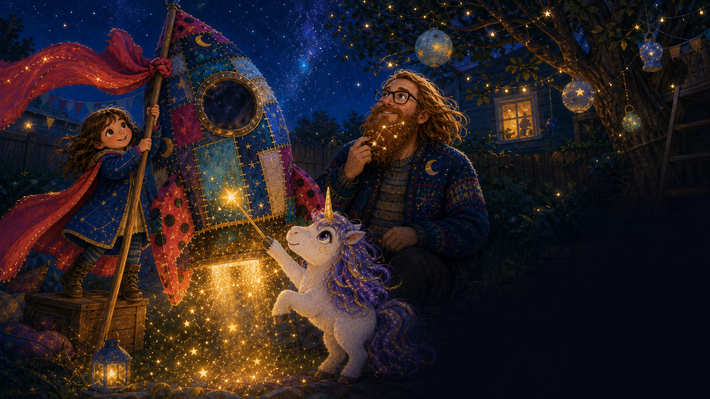
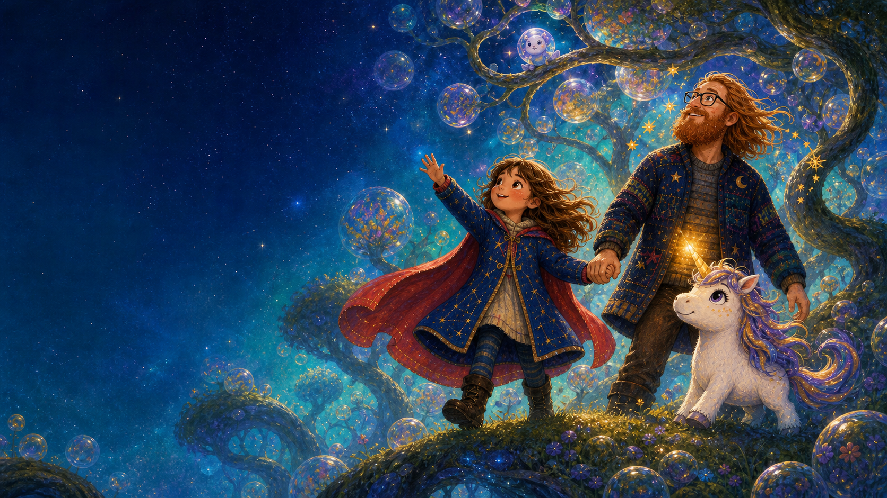
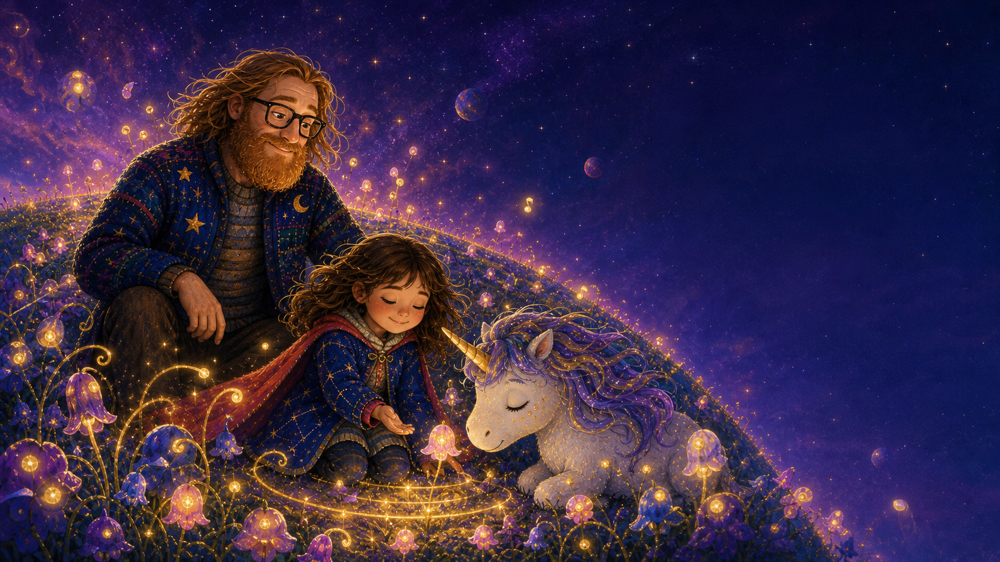
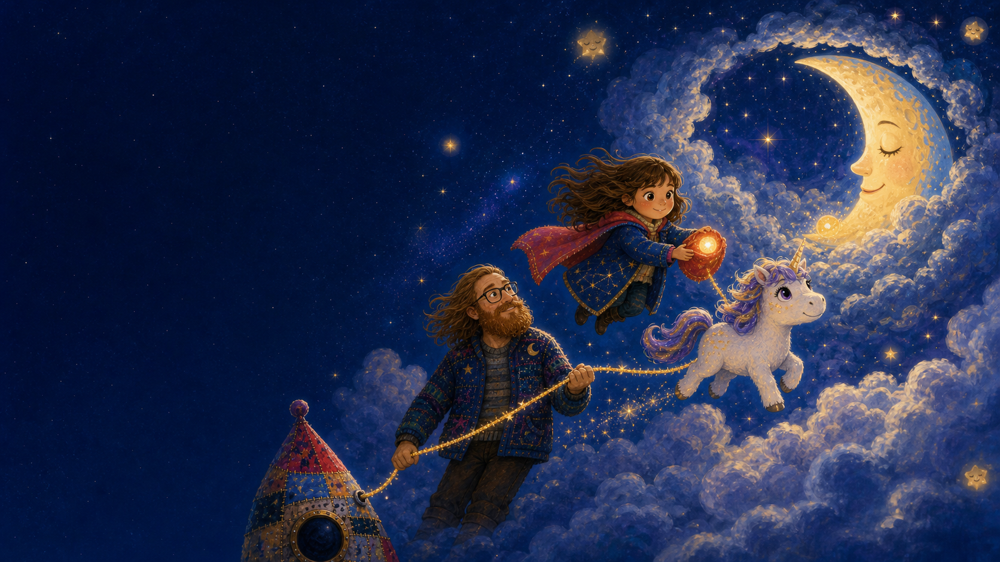
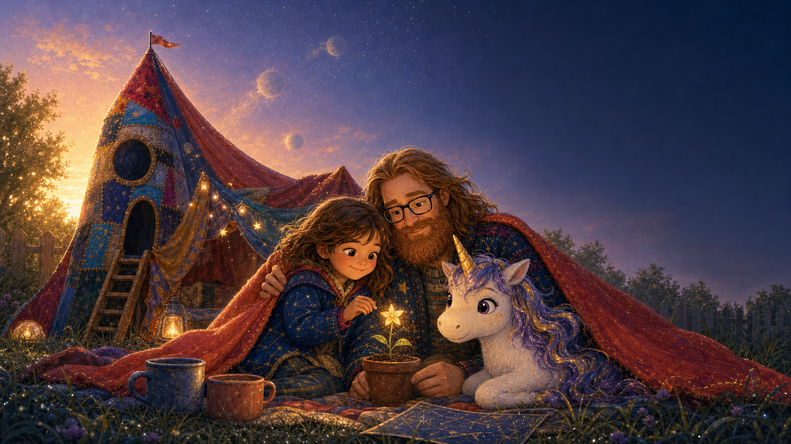
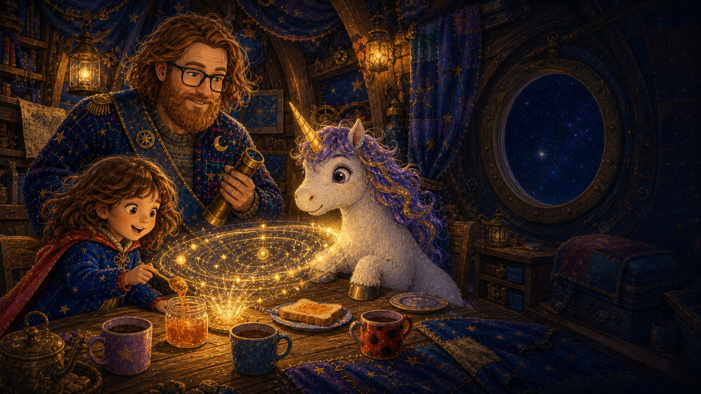
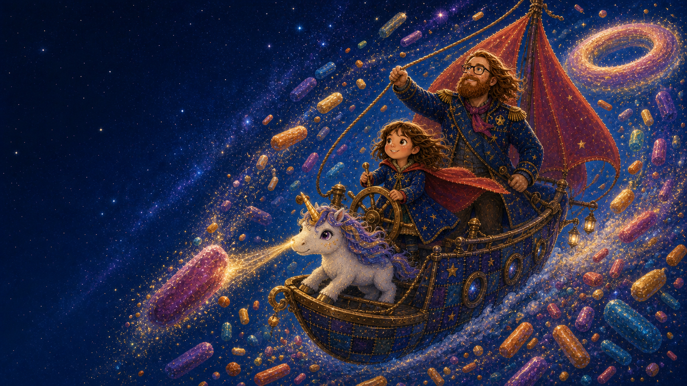
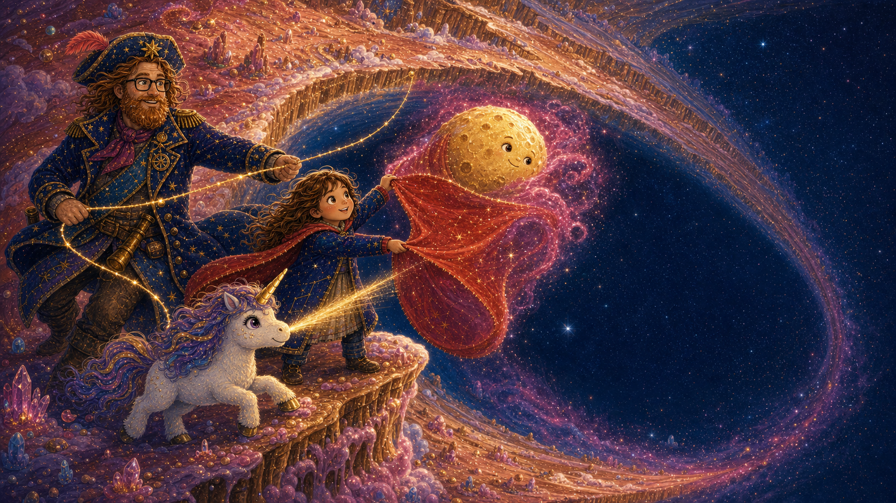
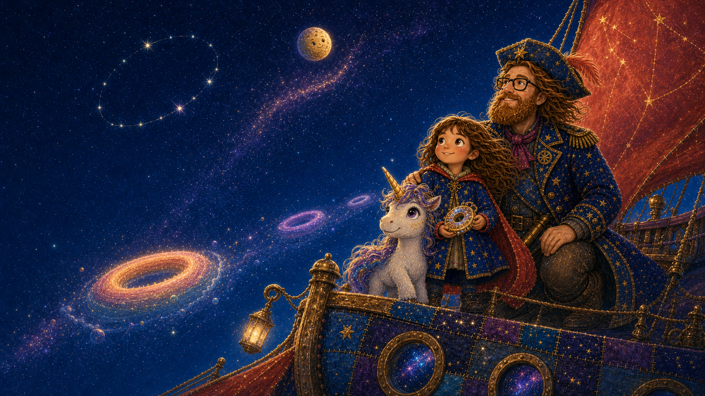

First voyage · 8 spreads
The Three Little Planets
Three tiny worlds need a steady hand, a listening heart, and one very gentle bedtime crew.
The little library between stars
Choose a book, cuddle in, and turn the galaxy one illustrated page at a time.
On the shelf
Swipe the pages, use the arrows, or let the browser read aloud.
First voyage · 8 spreads
Three tiny worlds need a steady hand, a listening heart, and one very gentle bedtime crew.
New voyage · 8 spreads
A round clue, a storm of sprinkles, and a cozy explorer growing into a proper space-pirate captain.
Tonight’s read-together adventure
Juliet, Uni, and Starbeard follow one tiny star beyond the backyard—and discover three worlds that need exactly their kind of courage.

One starry almost-bedtime…
Juliet tied her favorite red cape to the blanket rocket. Uni tapped the mast with one golden spark. Starbeard checked the little map hidden in his whiskers.
“Next stop,” Juliet whispered, “somewhere no bedtime story has gone before.”

Little Planet One · Tumble-Turn
Bubble trees floated overhead. Mossy paths curled upside down. And one tiny pearl-bubble was caught in the highest loop of all.
“Then we will turn together,” Juliet said, reaching for Uni and Starbeard.
One, two, trust!
Uni counted. Starbeard steadied the chain. Juliet’s cape stretched like a bright red ribbon—and the baby bubble bounced safely home.
Sometimes courage is simply knowing whose hand to hold.

Little Planet Two · Luma Bloom
Uni tried a silver note. Starbeard jingled his constellation beard. Nothing. So Juliet closed her eyes and listened for the quietest sound.
A tiny seed hummed. Juliet hummed back. Soon the whole planet was singing.

Little Planet Three · Naptune
Its golden dream seed had rolled into a nest of drifting cloud rings. Juliet and Uni floated after it while Starbeard anchored them with a rope of stars.
“We do not need louder,” Juliet said. “We need gentler.”
Softly home
When she placed it beside the moon, Naptune gave one enormous yawn. Every star snuggled into place.
“Take one dream seed for your own sky,” the moon whispered.

Home again
At dawn they planted the dream seed beside their blanket fort. It opened into one tiny starflower—proof that wonder can travel all the way home.
And beneath Juliet’s cape, three explorers dreamed of the next grand adventure.
A round-horizon adventure
A curious clue sends Juliet, Uni, and Starbeard through a storm of sprinkles—while one cozy explorer grows into a proper space-pirate captain.

Breakfast aboard the star-sloop
Juliet made one slow circle with her spoon. Up rose a golden ring of stars, with a blinking crumb-trail straight through the galaxy.
“That,” said Uni, “is the roundest clue I have ever seen.”
Starbeard’s captain look · One
Starbeard tied midnight blue across his cardigan, pinned on a brass compass, and lifted his spyglass.
“Crew,” he announced, “our course is wonderfully round.”

Starbeard’s captain look · Two
Juliet held the star-wheel steady. Uni nudged the biggest sprinkles with a golden beam. Starbeard’s cardigan stretched into a long, brass-buttoned coat as he called the clear path.
Port past the purple! Starboard round the blue!
Doughnut Planet · Rosegold Ring
Glaze seas shimmered below icing-clouds. Sprinkle forests chimed in the wind. Yet the tides stood still, and every moonlet pointed toward the empty middle.
“Something small is missing from somewhere very big,” Juliet said.

Starbeard’s captain look · Complete
Juliet opened her cape into a sail. Uni loosened the raspberry nebula with warm light. And Starbeard—hat, brass buttons, star-beads and all—anchored their shining rope.
“A captain holds steady,” he said, “but the crew chooses the way.”
One cape, one horn, one steady rope
It rolled into its orbit. The glaze seas began to sparkle, the sprinkle forests danced, and a ring-shaped compass appeared in Juliet’s hands.
The best treasure is a way to find one another again.

A galaxy of round horizons
The rescued moon drew a glowing circle in the sky. Beyond it waited blueberry rings, peach-gold rings, and lavender rings no map had named yet.
Starbeard tipped his captain hat. “Good thing this coat has room for more maps.”